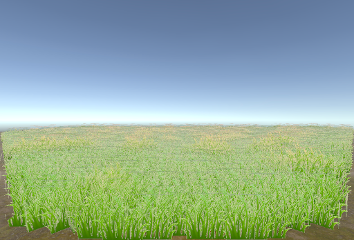

Project Abstract
This project focuses on the simulation of natural terrain in computer graphics. We aim to investigate the interaction of individual grass blades under the influence of external forces such as wind, while also attempting to optimize said methods to render grass more efficiently. From this, we seek to deepen our understanding of physics simulation within computer graphics. This project not only enhances our knowledge of terrain simulation but also contributes to broader applications in game development and realistic environmental modeling.
Technical Approach
Implementation of Grass
We utilized 3 intersecting quads for the base unit of grass that we want to replicate and use for our infinite grass. Using an initial texture, we then propagated this image through GPU instancing to fill the terrain with grass. We generate and compute grass positions using a compute shader so that the grass positions are directly generated within the GPU buffer. The result is as per seen in Figure 1 and 2 below.
Addition of Noise
Now that we are able to generate grass on the screen, our next step is
to make the grass look more natural. To do this, we want to add noise to
the xyz-axis in order to make the appearance of grass more random and
therefore, more natural. We achieve this using
Simplex.compute which provides 2D/3D gradient noise
functions. Through this, we are able to generate more realistic looking
grass as seen in Figure 3 and 4. As seen in Figure 4, for a better
aesthetic look, taller grass clusters are also given a more yellow
shade.
|
|
|
|
|
|
Simulating External Forces
Now that we have statically generated grass, we will add external forces to create a more natural feel towards the grass. In this instance, we chose to implement wind to simulate these external forces.
Here, the actual wind effect is applied by modifying the
localPosition of each blade. This position alteration
depends on the wind strength, the time factor (_Time.y),
and the localWindVariance.
We then use a cosine wave to simulate the swaying motion of the grass.
cosTime calculates a cosine value based on the time
component, which helps simulate the back-and-forth swaying motion of the
grass due to wind. The calculation of cosTime considers
both the wind strength and the blade's individual response to wind. We
then derive the variable trigValue from
cosTime and this is used to determine the extent of the
sway. It involves squaring cosTime to ensure that the sway
has a smoother transition and less direct linear movement, providing a
more realistic appearance of bending.
The final world position (worldPosition) of each grass
blade is calculated by adding the modified localPosition to
the original grass position (grassPosition.xyz). The
adjustments in the x and z coordinates simulate the sway, while the
y-coordinate adjustment ensures that the base of the blade remains more
or less fixed and the tip moves the most.
Unique Optimisation #1: Field of View and Level of Detail Rendering
To optimize on how we’re rendering grass, we decided to implement visibility culling, whereby assets that are not in the camera’s view are excluded from being rendered. To achieve this, we edited the shader code of the individual grass quads, such that if the quad’s position is outside the FOV of the camera or is too far away (LOD), it will not be rendered.
Field of View (FOV)
To determine if a certain quad is in the camera’s FOV, we use Unity’s
built-in shader variable unity_CameraWorldClipPlanes to
access the main camera’s clipping planes. Then, the dot product of
vertex p (position of the quad) and each clipping plane is calculated.
Theoretically, if this dot product is greater than zero, it means that
the vertex is “above” the plane, and should not be rendered. However, to
give more flexibility and ensure quads are not prematurely culled, we
use an adjustedBias variable instead of zero.
Level of Detail (LOD)
Another way to ensure that insignificant objects are not being rendered
is to use Level of Detail culling. As long as the distance between the
camera and the vertex p is more than a specified variable
_LODCutoff, the quad will not be rendered. This ensures
that objects that are too far away to be seen properly will not be
rendered.
|
|
Bounds Adjustment
After the initial implementation, despite the addition of the
adjustedBias variable, the grass quads are still being culled
prematurely at the left and right planes, as well as at the near plane
of the camera. To tackle this, we added a margin variable, and increased
the adjustedBias to include this margin. This ensures that
a little extra grass is rendered beyond the culling planes of the
camera, such that the camera looks like it is situated within the grass,
and prevents premature culling.
|

|

|
Unique Optimisation #2: Chunk rendering
Currently, multiple grass meshes form a chunk, and multiple chunks together form the entire grass patch. To further optimize our program’s performance, chunks that are too far away from the camera are completely excluded from the visual buffer.
|
|
To determine the grass chunks to exclude from the visual buffer, the
distance between the camera position and the center of each grass chunk
is computed. If the distance falls below a custom set
CustomRenderDistance, the grass chunk is completely
excluded from the visual buffer.
Note: LOD culling and chunk rendering are separate, different optimisation techniques. In LOD culling, individual grass blades which fall beyond the culling distance are still written to the visual buffer, but scaled down to an invisible mesh. In chunk rendering, the entire grass chunk is completely excluded from the visual buffer, further optimizing performance.
Problems & lessons learnt
Technical Challenge #1: Unfamiliarity with the Unity ecosystem
In the beginning, only one of us ever had experience working with Unity
prior. Hence, we had to allocate additional time for all 4 of us to
properly pick up the necessary skills to execute the project.
Lesson learnt #1: Pick a toolkit that everybody is comfortable
with.
Technical Challenge #2: Resources in Unity
Without any prior experience in Unity, knowing which Unity resources
within the Unity editor to tap on was a challenge. This was especially
apparent in the implementation of culling, whereby countless hours were
spent on the implementation of culling within the compute shader, only
to realise that the material shaders were what we were looking for.
These issues could have easily been prevented if we had done proper
research before even writing a single line of code.
Lesson learnt #2: Always do your proper research, and ensure
that you're ready before execution.
Non-technical challenge #1: Project workflow consensus
All 4 of us had no prior experience with working in a game developmental
environment, and hence we were unsure of how the game development
pipeline looked like. It was not only challenging to split the
developmental work into 4 equal slices, but also to craft out an
efficient pipeline for us to concurrently work on the project on our own
separate time. Fortunately, our project workflow was ironed out before
execution, which definitely saved us on a ton of time on potential work
overlaps and conflicts.
Lesson learnt #3: Come to a consensus on the project workflow,
and iron out any potential lapses in the developmental process before
execution.
Non-technical challenge #2: Asynchronous collaboration
Throughout the course of working on the project, it was difficult to
organise synchronous meetings due to conflicting schedules amongst the
team members. This made it difficult to iron out any ongoing challenges,
and pave the way ahead. Hence, we had to rely on mostly asynchronous
collaboration, relying on telegram for communication, and tools like
Google Drive for better organisation and task-keeping.
Lesson learnt #4: Iron out the schedules amongst the team
during the first meeting, and come up with a asynchronous plan.
Results
FOV and LOD optimisation
Comparing renders for a field size of 1000, the FPS achieved with culling optimization increased by 42%, from 13.3 FPS to 18.9 FPS.
|
|
|
Chunk rendering optimisation
Comparing renders for a field size of 1000, the FPS achieved with chunk rendering optimization increased by almost 7 fold, from 10.3 FPS to 70.5 FPS.
|
|
|
|
Final project scene
|
|
|
|
References
- NVIDIA article on rendering countless waves of grass: https://developer.nvidia.com/gpugems/gpugems/part-i-natural-effects/chapter-7-rendering-countless-blades-waving-grass
Contributions
Chay Hui Xiang
- Populated initial grass clusters and created initial working prototype
- Added wind simulations to grass
- Added y-noise aesthetics to differentiate tall and short grass
Lim Sui Kiat
- Added xyz noise to grass
- Compiled website / report deliverables for project checkpoint and final project submission
Marcus Yeo
- Implemented chunk rendering optimisation
- Added moving camera system
- Curated project video for project checkpoint and final project submission
Ong Jing Xuan
- Scaffolded project skeleton, instantiating grass textures and creating initial boilerplate for grass rendering
- Implemented LOD culling
- Implemented FOV culling
- Implemented chunk rendering